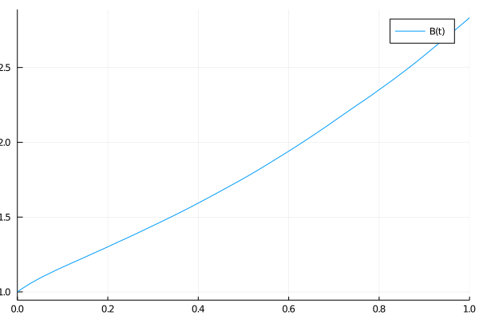

Tutorial 3: OOP Coefficients


In this tutorial, you will learn:
- How to declare the out-of-place coefficients for dynamical systems.
Introduction
In the previous tutorial we have learned how to declare in-place coefficients. We now focus on the out-of-place case.
Setup
The first step is to load the pertinent libraries for the tutorial:
using UniversalDynamics
using UnPack
using PlotsAlways take into account that most of the objects have documentation that can be inspected using ? followed by the object name. For example:
# Type ? to enter help mode
help?> SystemDynamicsOut of place coefficients
We will implement the same problem as in the previous tutorial with in-place coefficients:
S0 = @SVector rand(1)
S = SystemDynamics(S0)
include("assets/DaiSingletonParameters_A3_1.jl")
(υ₀, θ₀, r₀, μ, ν, κ_rυ, κ, ῡ, θ̄, η, σ_θυ, σ_θr, σ_rυ, σ_rθ, ζ, α_r, β_θ) = DaiSingletonParameters()(0.008389999999999998, 1.069970971985938, 2.082652261993877, 0.366, 0.228, 0.0348, 18.0, 0.0158, 0.0827, 0.09159694318043589, 0.0212, -0.0886, 4.2, -3.77, 0.014422205101855956, 3.26e-14, 7.9e-10)Define all Short Rate model parameters, taking into account the in-place functions:
x0 = @SVector [υ₀, θ₀, r₀]
ξ₀(t) = zero(t) # ξ₀ = zero
ξ₁(t) = @SVector [0, 0, 1]
ϰ(t) = @SMatrix([
μ 0 0
0 ν 0
κ_rυ -κ κ
])
θ(t) = @SVector [ῡ, θ̄, θ̄ ]
Σ(t) = @SMatrix [
η 0 0
η * σ_θυ 1 σ_θr
η * σ_rυ σ_rθ 1
]
α(t) = @SVector [0, ζ^2, α_r]
β(t) = @SMatrix [
1 0 0
β_θ 0 0
1 0 0
]
x = MultiFactorAffineModelDynamics(x0, ϰ, θ, Σ, α, β, ξ₀, ξ₁; noise=NonDiagonalNoise(3))
B = SystemDynamics(one(eltype(x)))
dynamics = [:S => S, :x => x, :B => B]3-element Array{Pair{Symbol,UniversalDynamics.AbstractDynamics{false,Dim,NoiseDim,DiagNoise,Float64} where DiagNoise where NoiseDim where Dim},1}:
:S => 1-dimensional system dynamics with 1-dimensional DiagonalNoise
state: [0.61408]
in-place? false
Dimension: 1
Noise dimension: 1
diagonal noise? true
:x => 3-dimensional Multi-Factor Affine Short Rate model dynamics
state: [0.00839, 1.06997, 2.08265]
in-place? false
Dimension: 3
Noise dimension: 3
diagonal noise? false
:B => 1-dimensional system dynamics with 1-dimensional DiagonalNoise
state: 1.0
in-place? false
Dimension: 1
Noise dimension: 1
diagonal noise? trueNow, let's construct the OOP drift f and diffusion g coefficients for this new scenario.
function f(u, p, t)
@unpack _dynamics, _securities_ = p
@unpack _x = _dynamics
@unpack _S_, _x_, _B_ = _securities_
S = remake(_S_, u)
x = remake(_x_, u)
B = remake(_B_, u)
IR = FixedIncomeSecurities(_x, x, B)
dS = IR.r(t) * S(t)
dx = drift(x(t), get_parameters(_x), t)
dB = IR.r(t) * B(t)
return vcat(dS, dx, dB)
end
function g(u, p, t)
@unpack _dynamics, _securities_ = p
@unpack _x = _dynamics
@unpack _S_, _x_, _B_ = _securities_
@unpack σ = p
S = remake(_S_, u)
x = remake(_x_, u)
B = remake(_B_, u)
dS = σ * S(t)
dx = diffusion(x(t), get_parameters(_x), t)
dB = zero(eltype(u))
return @SMatrix [dS 0 0 0 0
0 dx[1,1] dx[1,2] dx[1,3] 0
0 dx[2,1] dx[2,2] dx[2,3] 0
0 dx[3,1] dx[3,2] dx[3,3] 0
0 0 0 0 dB]
end
ds = DynamicalSystem(f, g, dynamics, (σ = 0.1, ))5-dimensional dynamical system with 5-dimensional NonDiagonalNoise
state: [0.61408, 0.00839, 1.06997, 2.08265, 1.0]
in-place? false
Dimension: 5
Noise dimension: 5
diagonal noise? falsesol = solve(ds, 1.; alg=UniversalDynamics.EM(), seed=1, dt=0.01);
plot(sol, vars=1, label="S(t)")
plot(sol, vars=2:4, label=["x₁(t)" "x₂(t)" "x₃(t)"])
plot(sol, vars=5, label="B(t)")
This page was generated using Literate.jl.